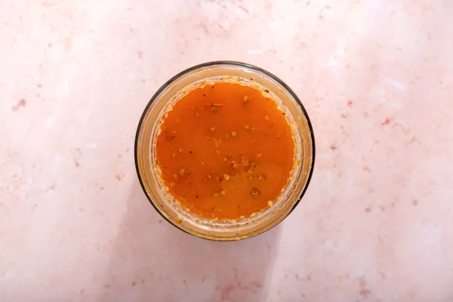
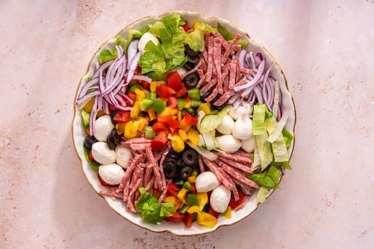

Introducing Pizza Salad, a vibrant and delicious twist on the classic pizza! This creative dish combines crisp, fresh salad greens with the savory goodness of pizza toppings.
Imagine a bed of greens topped with juicy tomatoes, slices of pepperoni, olives, and a sprinkle of mozzarella.
Drizzled with your favorite dressing, this pizza-inspired salad offers a delightful fusion of flavors in every bite.
A light and refreshing alternative for pizza lovers, it's a perfect addition to any meal or a standout on its own.
Add the red wine vinegar, tomato paste, Dijon mustard, salt, pepper, sugar, dried oregano,garlic powder and olive oil to a resealable jar or airtight container. Shake really well to combine. Taste and season with more salt, pepper and sugar as desired; it should be a very flavorful, emulsified vinaigrette.
Add pepperoni, mozzarella cheese, black olives, red onion, bell pepper and both lettuces to a large bowl.
Once ready to serve, shake the dressing really well once more. Add about half to the bowl with the salad and toss until everything is well and evenly coated. Add more dressing if desired, and keep the rest in the jar in the fridge for up to 3 days. Top the salad with grated Parmesan cheese and serve immediately with warm breadsticks on the side.